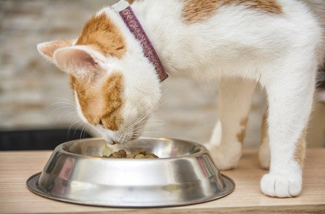
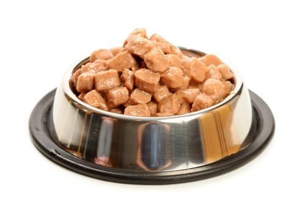

На этой странице собраны основные рекомендации по уходу за домашними кошками.
Раздел 1: питание | Раздел 2: уход | К началу
Раздел 1. Питание

При организации питания важно учитывать возраст и особенности питомца.
- Выбирать подходящий корм.
- Обеспечивать постоянный доступ к свежей воде.
- Соблюдать режим кормления.
Раздел 2. Ежедневный уход
- Чистота мисок и лотка.
- Регулярное вычёсывание шерсти.
- Игры и физическая активность.
- Профилактические осмотры у ветеринара.
Таблица рекомендаций
В таблице представлены примеры ежедневного ухода за домашним питомцем.
| Действие | Описание | Пример |
|---|---|---|
| Кормление | Подходящий рацион и свежая вода |
 |
| Игры | Игрушки для активности питомца | Подробнее о кошках |
| Здоровье | Профилактические осмотры | О ветеринарии |